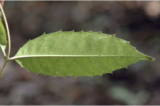
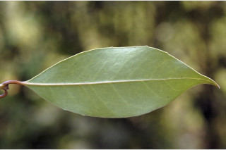
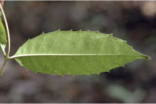
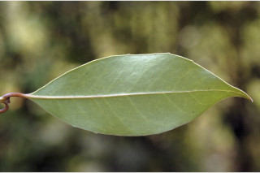
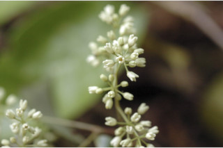
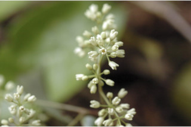
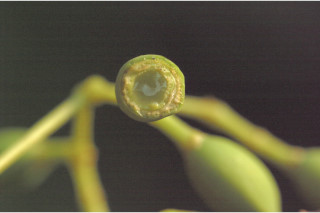
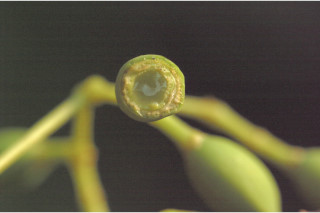

Trees up to 15 m tall.
15 ಮೀ. ಎತ್ತರದವರೆಗಿನ ಮರಗಳು.
Trees up to 15 m tall.
மரங்கள் 15 மீ. உயரம் வரை வளரக்கூடியது.
Bark brownish, rough; blaze pale brown.
ತೊಗಟೆ ತೆಳು ಕಂದು ಬಣ್ಣದಲ್ಲಿದ್ದು ಒರಟಾಗಿರುತ್ತದೆ ಕಚ್ಚು ಮಾಡಿದ ಜಾಗ ಬಿಳಿಯಾಗಿರುತ್ತದೆ.
Bark brownish, rough; blaze pale brown.
மரத்தின் பட்டை ப்ரவுன் நிறமானது; உள்பட்டை வெளிறிய ப்ரவுன் நிறமானது.
Young branchlets subquadrangular, lenticellate, glabrous.
ಎಳೆಯ ಕಿರುಕೊಂಬೆಗಳು ಉಪ-ಚತುಷ್ಕೋನ ಹೊಂದಿದ್ದು, ವಾಯುವಿನಿಮಯ ಬೆಂಡು ರಂಧ್ರಗಳ ಸಮೇತವಿರುತ್ತವೆ ಹಾಗೂ ರೋಮರಹಿತವಾಗಿರುತ್ತವೆ.
Young branchlets subquadrangular, lenticellate, glabrous.
சிறியநுனிக்கிளைகள் குறுக்குவெட்டுத் தோற்றத்தில் நான்கு கோணங்களுடையது, பட்டைத்துளைகள் (லெண்டிசெல்லேட்) உடையது, உரோமங்களற்றது.
Leaves simple, opposite, decussate; petiole 0.6-1.3 cm long, canaliculate; lamina 7.5-17.5 x 2.3-7.5 cm, elliptic to elliptic-oblong, apex gradually acuminate to subacute, base acute or attenuate, margin distantly serrate (with strong teeth) or entire, coriaceous to subcoriaceous, glabrous; midrib flat above, usually reddish when dry; secondary_nerves 8-12 pairs; tertiary and higher order nerves obscure or slightly impressed.
ಎಲೆಗಳು ಸರಳವಾಗಿದ್ದು ಕತ್ತರಿಯಾಕಾರದ ಅಭಿಮುಖ ಜೋಡನಾ ವ್ಯವಸ್ಥೆಯಲ್ಲಿರುತ್ತವೆ ; ಎಲೆತೊಟ್ಟುಗಳು0.6 – 1.3 ಸೆಂ.ಮೀ.ವರೆಗಿನ ಉದ್ದವಿದ್ದು, ಕಾಲುಗೆರೆ ಸಮೇತವಿರುತ್ತವೆ; ಪತ್ರಗಳು7.5-17.5 X 2.3-7.5 ಸೆಂ.ಮೀ. ಗಾತ್ರ, ಅಂಡವೃತ್ತದಿಂದ ಅಂಡವೃತ್ತ-ಚತುರಸ್ರದವರೆಗಿನ ಆಕಾರ, ನಿಧಾನ ಗತಿಯಲ್ಲಿ ಕ್ರಮೇಣ ಚೂಪಾಗುವುದರಿಂದ ಉಪಚೂಪಾದ ಮಾದರಿವರೆಗಿನ ತುದಿ, ಚೂಪಾದುದರಿಂದ ಒಳಬಾಗಿದ ಮಾದರಿವರೆಗಿನ ಬುಡ, ದಂತಗಳ ನಡುವೆ ಹೆಚ್ಚಿನ ಅಂತರವುಳ್ಳ ಗರಗಸ ದಂತಿತ ಮಾದರಿಯ (ದೃಢವಾದ ದಂತಗಳೊಡನೆ)ಅಥವಾ ನಯವಾದ ಅಂಚು, ಕಾಗದ ಅಥವಾ ಉಪ-ಕಾಗದವನ್ನೋಲುವ ಮೇಲ್ಮೈ ಹೊಂದಿದ್ದು ರೋಮರಹಿತವಾಗಿರುತ್ತವೆ; ಮಧ್ಯನಾಳ ಮೇಲ್ಭಾಗದಲ್ಲಿ ಚಪ್ಪಟೆಯಾಗಿರುತ್ತದೆ,ಒಣಗಿದಾಗ ಸಾಮಾನ್ಯವಾಗಿ ಕೆಂಪು ಛಾಯೆ ಹೊಂದಿರುತ್ತವೆ; ಎರಡನೇ ದರ್ಜೆಯ ನಾಳಗಳು 8 ರಿಂದ 12 ಜೋಡಿಗಳಿರುತ್ತವೆ; ಮೂರನೇ ಮತ್ತು ಮೇಲ್ದರ್ಜೆಯ ದರ್ಜೆಯ ನಾಳಗಳು ಅಸ್ಪಷ್ಟವಾಗಿರುತ್ತವೆ.
Leaves simple, opposite, decussate; petiole 0.6-1.3 cm long, canaliculate; lamina 7.5-17.5 x 2.3-7.5 cm, elliptic to elliptic-oblong, apex gradually acuminate to subacute, base acute or attenuate, margin distantly serrate (with strong teeth) or entire, coriaceous to subcoriaceous, glabrous; midrib flat above, usually reddish when dry; secondary_nerves 8-12 pairs; tertiary and higher order nerves obscure or slightly impressed.
இலைகள் தனித்தவை, எதிரடுக்கமானவை, குறுக்குமறுக்கானவை; இலைக்காம்பு 0.6-1.3 செ.மீ. நீளமானது, குறுக்குவெட்டுத் தோற்றத்தில் கேனாலிகுலேட்; இலை அலகு 7.5-17.5 X 2.3-7.5 செ.மீ., நீள்வட்ட வடிவானது முதல் நீள்வட்ட-நீள்சதுர வடிவானது, அலகின் நுனி சீராக அதிக்கூரியது முதல் கூரியது, அலகின் தளம் கூரியது அல்லது அட்டனுவேட், அலகின் விளிம்பு ஆங்காங்கே ரம்ப பற்களுடையது அல்லது அலகின் விளிம்பு முழுமையானது, கோரியேசியஸ் முதல் சப்கோரியேசியஸ், உரோமங்களற்றது; மையநரம்பு மேற்பரப்பில் அலகின் பரப்பிற்கு சமமானது, பொரும்பாலும் உலரும் போது சிவப்பு நிறமானது; இரண்டாம் நிலை நரம்புகள் 8-12 ஜோடிகள்; மூன்றாம் நிலை நரம்புகள் மற்றும் பிற நரம்புகள் கண்களுக்கு புலப்படாது அல்லது சிறிது அலகின் பரப்பைவிட பள்ளமானது.
Inflorescence axillary divaricate panicles; flowers polygamodioecious, cream-white; pedicel 0.4 cm long.
ಪುಷ್ಪಮಂಜರಿಗಳು ಅಕ್ಷಾಕಂಕುಳಿನಲ್ಲಿನ ಪ್ರಧಾನ ಕಾಂಡದ ಸಮಕೋನದಲ್ಲಿದ್ದು ಕವಲೊಡೆಯುವ ಮಾದರಿಯವುಗಳಾಗಿರುತ್ತವೆ;ಹೂಗಳು ಸಂಕೀರ್ಣ ಲಿಂಗಿಗಳಾಗಿದ್ದು ಗಂಡು ಮತ್ತು ಹೆಣ್ಣು ಹೂಗಳು ಬೇರೆ ಬೇರೆ ಸಸ್ಯಗಳಲ್ಲಿರುತ್ತವೆ,ಹೂಗಳು ಕೆನೆ-ಬಿಳಿ ಬಣ್ಣದವು;ಹೂ ತೊಟ್ಟುಗಳು 0.4 ಉದ್ದವಿರುತ್ತವೆ.
Inflorescence axillary divaricate panicles; flowers polygamodioecious, cream-white; pedicel 0.4 cm long.
மஞ்சரி இலைக்கோணங்களில் காணப்படும் இருமுறை கிளைத்த பேனிக்கிள்; மலர்கள் பாலிகேமோ-டையிசியஸ், கிரீம் நிறமானது-வெள்ளை நிறமானது; மலர்காம்பு 0.4 செ.மீ. நீளமானது.
Drupe, ellipsoid, blue when ripe; seed one.
ಡ್ರೂಪ್ಗಳು ಅಂಡವೃತ್ತದ ಆಕಾರದಲ್ಲಿದ್ದು ಕಳಿತಾಗ ಹಸಿರು ಬಣ್ಣದಲ್ಲಿರುತ್ತವೆ;ಬೀಜ 1.
Drupe, ellipsoid, blue when ripe; seed one.
உள்ளோட்டுத்தசைகனி (ட்ரூப்), நீள்வட்ட வடிவானது, கனியும் போது நீல நிறமானது; ஒரு விதையுள்ள கனி.
 



 



 
